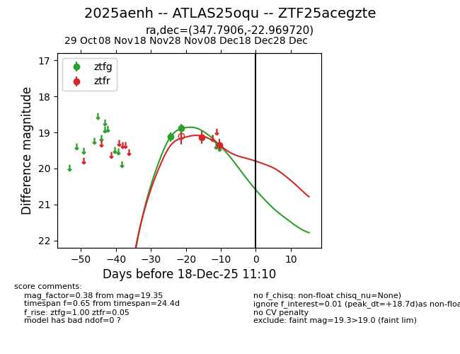
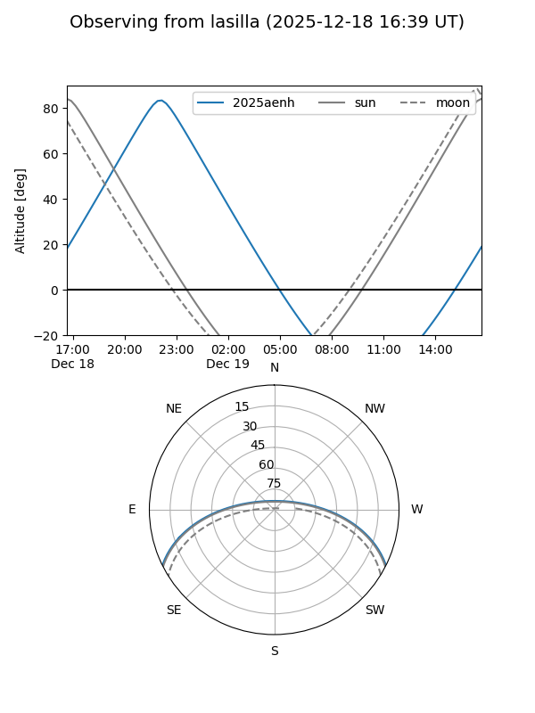
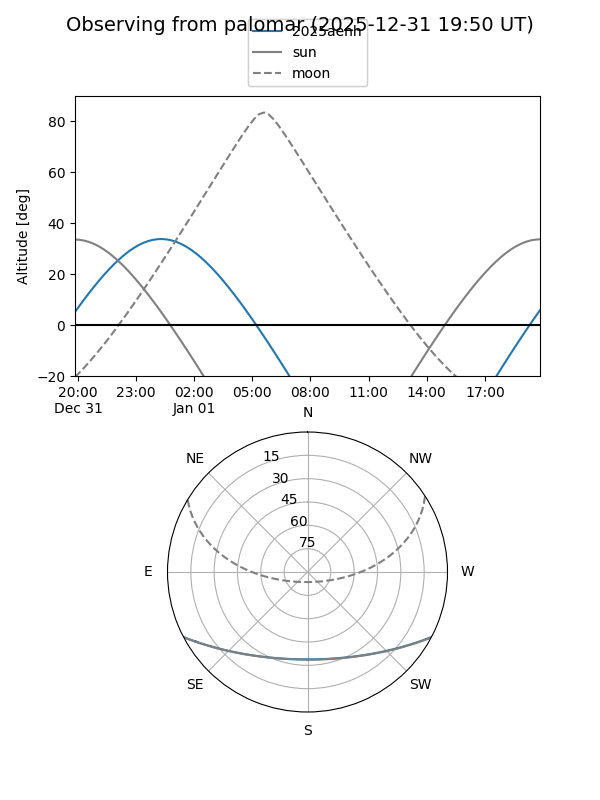
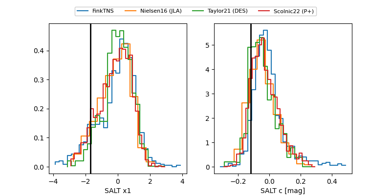

2025aenh
Target 2025aenh at 2025-12-31 18:00
Aliases and brokers:
FINK: link
Lasair: link
ALeRCE: link
TNS: link
YSE: link
alt names
ZTF25acegzte (ztf,fink_ztf)
2025aenh (tns,yse)
ATLAS25oqu (atlas)
Coordinates:
equatorial (ra, dec) = 347.7906,-22.96972
equatorial (HMS+DMS) = 23:11:09.75,-22:58:10.99
galactic (l, b) = (37.7625,-66.95197)
Flags:
Photometry:
last ztfg=18.89, ztfr=19.35
2 ztfg, 2 ztfr detections
Lightcurve

Visibility


Additional plots
